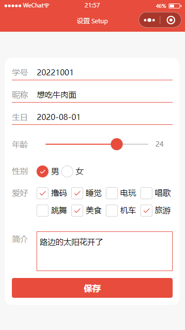

- 内容
-
数据绑定
表单事件的使用
- 目的
-
掌握数据绑定的使用
了解表单提交的基本过程
熟悉常见表单元素的事件
- 要求
-
独立完成完成用户注册和问卷调查两个案例的设计和开发，并应用到小程序项目中
实验报告：采用学院统一下发的格式文件，以图片或代码形式展示并说明实施过程、各部分功能、具体内容和实现细节，并按照要求命名，最后导出为PDF，提交个人学习通作业
未按要求在规定时间内提交视为无效，不得分
- 用户注册
- 1. 使用组件
- .input - text/nickname
- .slider
- .picker
- .radio radio-group
- .checkbox checkbox-group
- .textarea
- .buttton - submit
- 2. 用户信息字段
-
userInfo:{
ubirth:'2020-08-01',
udesc:'hi,there.',
ulike:[],
uage:18,
ugender:'女',
uname:'glpla',
usn:20221001
}
- 3. 提交代码
- 默认提交json，所以不需要额外指定header
-
submit(e){
console.log(e.detail.value);
wx.request({
url: 'http://127.0.0.1:3000/userinfo',
method:'POST',
data:this.data.userInfo,
success:(res)=>{
console.log(res);
},
fail:err=>{
console.log(err);
}
})
}
- 4. 服务器脚本
-
const express = require('express')
const fs = require('fs');
// 创建Web服务器
const app = express();
const port = 3000;
// 静态资源；系统中间件-靠前引用；路由中间件
app
.use(express.static('./public'))
.use(express.json())
app.post('/userInfo', (req, res) => {
console.log(req.body);
fs.writeFile('./public/data/userInfo.json', JSON.stringify(req.body), (error) => {
if (error) {
console.log('保存文件失败了')
}
});
res.json(req.body)
})
app.listen(port, () => {
console.log('server is on at: http://127.0.0.1:3000');
});
- 5. 效果图
-

- 问卷调查
- 用户姓名uname
- 用户邮箱uemail
- 用户留言umsg